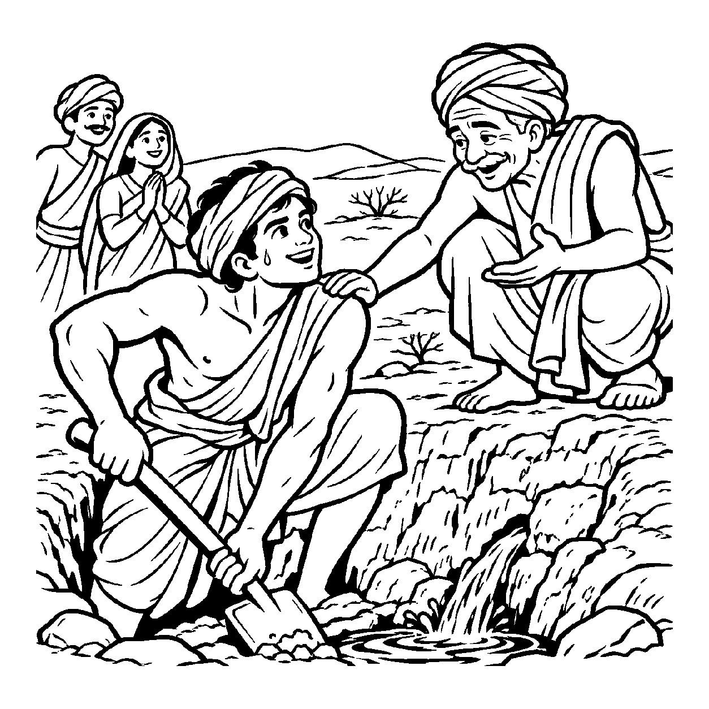

રસોડામાં ચૂલા પર પાણી અને ચોખા મુકાયા હોય, હજી તો અગ્નિ પ્રગટી રહ્યો હોય અને ભાત રંધાયો પણ ન હોય, છતાં કોઈ પૂછે કે 'શું કરો છો?' ત્યારે ગૃહિણી સહજ ભાવે ઉત્તર આપે છે: "હું ભાત રાંધું છું." વાસ્તવમાં તે ચોખા અને પાણી ઉકાળી રહી છે, પણ તેનું લક્ષ્ય સીધું પૂર્ણ ભાત પર છે. પ્રક્રિયાના પ્રારંભમાં જ સિદ્ધિનું દર્શન એટલે 'વર્તમાનનૈગમ નય'.
જે કાર્ય શરૂ થયું છે પરંતુ પૂર્ણ થયું નથી, તેને તેના લક્ષ્યના આધારે વ્યવહારમાં "હું આ કામ કરી રહ્યો છું" એમ કહી શકાય. આ કથન કાર્યની દિશા દર્શાવે છે; અંતિમ પરિણામ થઈ જ ગયું છે કે નિશ્ચિત છે એવો અર્થ નથી. નયના સંદર્ભમાં સંકલ્પ અને કાર્યનો સંબંધ સમજવો, અને પૂર્ણતા અંગેના તથ્યને અલગ રાખવું જરૂરી છે.
"હું ભાત રાંધું છું" જેવા વાક્યમાં કાર્યની ચાલતી પ્રક્રિયા અને તેનું લક્ષ્ય સંક્ષેપમાં કહેવાય છે; તે ભાત તૈયાર થઈ ગયો છે એવો દાવો નથી. આ નય રોજિંદી ભાષાના આવા સંદર્ભિત પ્રયોગને સમજાવે છે. કાર્ય પૂર્ણ થશે કે નહીં તે વાસ્તવિક પરિસ્થિતિ અને પ્રયત્ન પર આધારિત છે.
સાધન તણી પ્રક્રિયા જે, હજુય અનિષ્પન્ન;
સાધ્ય તણા સંકલ્પથી, ભાસે આ પળ નિષ્પન્ન.
આ પળમાં જ આત્માની સાચી પ્રાપ્તિ છે એવા પ્રબળ પુરુષાર્થ સાથે વર્તમાન ક્ષણમાં સદા જાગ્રત રહેવું.

રણપ્રદેશના એક દુષ્કાળગ્રસ્ત ગામમાં પીવાના પાણીનું એક ટીપું નહોતું. લોકો તરસથી વ્યાકુળ થઈને ગામ છોડીને પલાયન કરી રહ્યા હતા. તે સમયે યુવાન સોમચંદે ગામલોકોને રોકીને સૂકી ધરતી પર પાવડો ચલાવવાનું શરૂ કર્યું. કાળઝાળ બળબળતી ગરમીમાં ધૂળ ઉડતી હતી અને કઠણ પથ્થરો નીકળતા હતા. આસપાસ ઊભેલા લોકો ઉપહાસ કરવા લાગ્યા: "મૂરખ, આ ઉજ્જડ રેતીમાં તું શું ધૂળ ઉડાડે છે? ક્યાંય પાણી નથી!" કલાકોના પરિશ્રમ પછી સોમચંદના હાથમાં ફોલ્લા પડી ગયા, શરીર થાકીને લોથપોથ થઈ ગયું. મનમાં સંશયના વમળો ઊઠ્યા: "શું મારી આ મહેનત ખરેખર વ્યર્થ જશે?" તે પાવડો ફેંકીને બેસી પડ્યો. થાક અને નિરાશા વચ્ચે પ્રશ્નાર્થ ઘેરાયો: "શું આ અધૂરી મથામણમાંથી અમૃત પામવાનો કોઈ માર્ગ છે?"
તે જ ક્ષણે ગામના એક અનુભવી જળવિદ્ વડીલે આવીને સોમચંદને ઊભો કર્યો અને સ્નેહથી કહ્યું, "બેટા, જરા વર્તમાનનૈગમ દ્રષ્ટિ કેળવ! તું માત્ર ખાડો નથી ખોદી રહ્યો, તું આ ક્ષણે આખા ગામ માટે અમૃત-કુંભ તૈયાર કરી રહ્યો છે! જે ક્ષણે પાવડો જમીનને સ્પર્શ્યો, તે જ ક્ષણે જળ પ્રગટ થવાની યાત્રા પૂર્ણ થઈ ગઈ ગણાય. સાધન જ સાધ્યનો પ્રારંભ છે." વડીલના આ બોધ-અમૃતનું પાન કરતાં જ સોમચંદના થાકેલા અંગોમાં અદભુત નવી ઊર્જા વહી નીકળી. અધૂરું કાર્ય પળવારમાં સિદ્ધવત્ ભાસવા લાગ્યું અને અડગ શ્રદ્ધાથી વધુ ખોદતાં જ ધરામાંથી મીઠું અમૃત-જળ ફૂટી નીકળ્યું. સંશયો સમાપ્ત થઈ અંતરમાં પરમ વિશ્રામ છવાઈ ગયો.
જો આ નય જીદ કે કદાગ્રહ બને, તો મનુષ્ય પ્રારંભિક સફળતાને જ અંતિમ સિદ્ધિ માની બેસે છે. હજુ તો સાધના કે અભ્યાસનું પહેલું પગથિયું ચડ્યો હોય ત્યાં જ પોતાની જાતને પંડિત કે મુક્ત માનીને તે બાકીના આવશ્યક પુરુષાર્થનો ત્યાગ કરી દે છે. અધૂરા ઘડા જેવી આ અપરિપક્વ અહંકારયુક્ત વૃત્તિ કાર્યને મધ્યમાં જ રોળી નાખે છે અને કાયમી જડતા જન્માવે છે.
આ જ નય-દ્રષ્ટિ જો સમન્વયની યાત્રા બને, તો તે સાધકને આધ્યાત્મિક સાધનાના પ્રથમ સોપાન પર જ મુક્તિનો અલૌકિક સંતોષ અને ઉત્સાહ અર્પે છે. તે સમજે છે કે સમ્યગ્દર્શન થતાં જ મોક્ષની શરૂઆત થઈ ચૂકી છે. સાધનાનો પ્રત્યેક શ્વાસ સાધ્યની સુગંધથી ભરાઈ જાય છે અને મુક્તિ-યાત્રા પોતે જ મંઝિલ જેવી પરમ આનંદમય બની જાય છે.